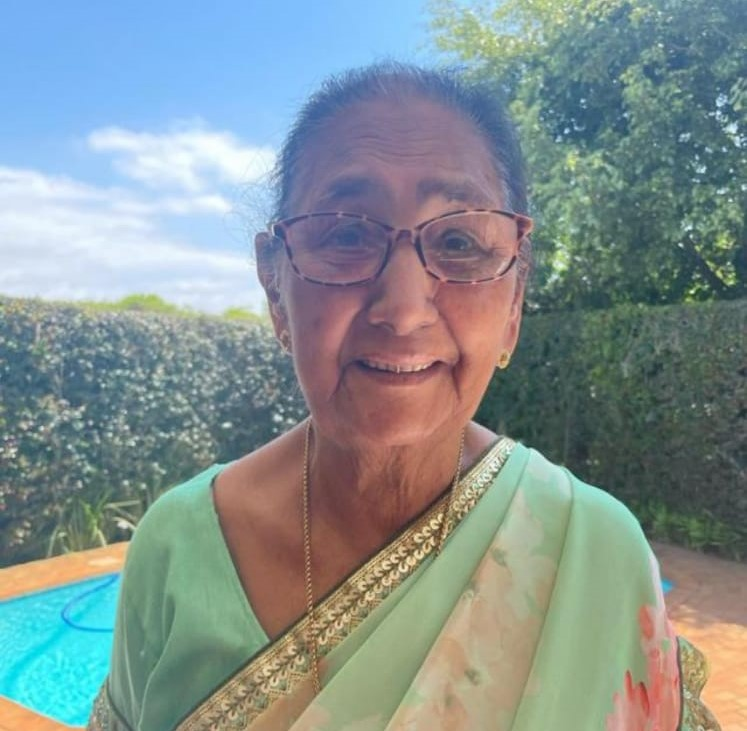
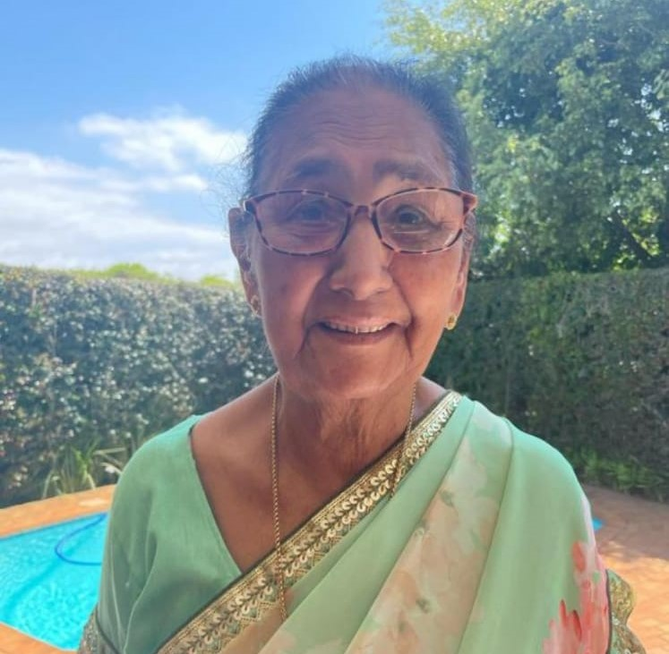
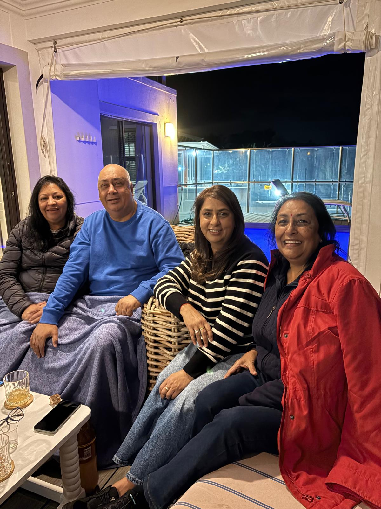
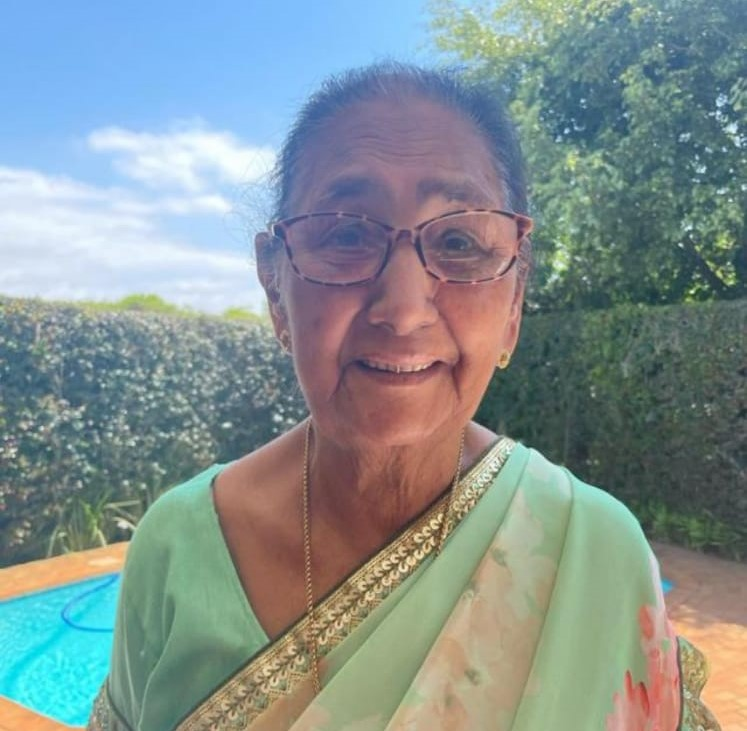

Meet the Inspiration
 

The heart and soul behind 4Bakers — Our dad, Jugparsad Maharaj (Jack) and our mum Rajmoney Maharaj.
4 Bakers: Founded by 4 sibilings who shared a passion for baking and a dream of creating a bakery that feels like home, learning the art from our dad who was a master baker. What began as a weekend project selling goods in the garage of our, home has now grown into a full-service bakery with a loyal customer base. With roots in traditional baking and a flair for creative flavours, 4 Bakers continues to grow by focusing on quality, community, and customer satisfaction. We aim to be more than just a bakery — we want to be part of every celebration and everyday moment.
We aim to bring people together through the warmth of bread, pastries, and cakes. Every recipe is crafted with care, using quality ingredients and a touch of innovation.
Jay – Head Baker
Nadia – Pastry Chef
Ishara and Kershni – Cake Designers

The heart and soul behind 4Bakers — Our dad, Jugparsad Maharaj (Jack) and our mum Rajmoney Maharaj.
The family who has been the backbone of 4Bakers, supporting every step of the journey.